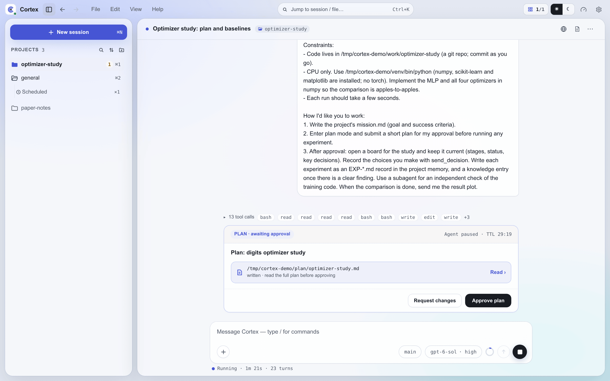

Safety and Approvals¶
Cortex can edit files, spawn processes, manage GPU training, and talk to multiple machines. Its safety model has four parts: a written safety boundary that tells the agent what it may do on its own, a queue for operations that need your sign-off, interactive cards for plan approval and questions, and a small set of mechanical guards around the server's own interfaces. The interactive cards run over the hook-bridge (see hooks.md) and the interaction MCP tools (see mcp.md).
The three blast-radius classes¶
A safety boundary sorts agent operations into three classes. It is written in
the root AGENTS.md of your Cortex home ($CORTEX_HOME/AGENTS.md), which
every session loads, so it is guidance the agent follows rather than a check
the server performs. The AGENTS.md that cortex init writes has no safety
section; you add one in your own words. The judgment criterion that works best
is behavioral impact, not file category: fixing a typo in a skill file and
adding a new workflow step to it are different classes of operation even
though both touch the same file.
A typical boundary, taken from a working installation, looks like this.
Self-serve (autonomous)¶
Operations the agent performs without asking: read-only information gathering, local state updates, and low-risk maintenance.
- Read files, check GPU status, read logs, run small test scripts
- Update context files (STATUS.md, experiments/, knowledge/, OVERVIEW.md)
- Web search, knowledge scans
- Start training runs within budget, run analysis scripts
- Skill maintenance changes (typo fixes, format alignment, description rewording — no behavioral change)
- Agent-server non-behavioral fixes (syntax errors, log messages, comment updates)
Needs approval (requires sign-off)¶
Operations that change system behavior, consume significant resources, or are hard to reverse. The agent writes them to the approval queue and leaves them unexecuted until you decide.
- Modify AGENTS.md or CLAUDE.local.md
- New skills or skill behavioral changes (new triggers, new workflow steps, capability expansion)
- Agent-server behavioral or architectural changes (new features, protocol changes, API changes)
- Over-budget training tasks, large-scale architecture modifications
- Delete files or data
- Modify model code or training configurations
- Stop the Cortex server or daemon processes
Forbidden (never permitted)¶
Operations the agent refuses even if you offer to approve them: system-level changes that could destabilize the machine.
- Install system-level packages
- Modify system configuration
rm -rf
Classifying an edge case¶
| Operation | Class | Reason |
|---|---|---|
| Fix a typo in a skill's SKILL.md | Self-serve | Maintenance, no behavioral change |
| Add a new workflow step to a skill | Needs approval | Changes behavioral logic |
| Fix an agent-server syntax error | Self-serve | Non-behavioral fix |
| Add new guard logic to agent-server | Needs approval | Changes behavior |
| Start GPU training within budget | Self-serve | Within budget |
| Modify AGENTS.md rules | Needs approval | System convention change |
The boundary is advisory. Nothing in the server inspects a command before it
runs: Claude Code is spawned with
--dangerously-skip-permissions --permission-mode bypassPermissions, and PI
runs its tools without a permission prompt. Budgets are advisory in the same
way — budget.json limits are reported by cost_query and the UI, and no
caller refuses work for exceeding them. The boundary holds because the agent
reads it on every turn and because the queue below gives it a place to put
what it should not do alone.
How an operation reaches the queue¶
The approval queue is the Markdown file
$CORTEX_HOME/context/PENDING_APPROVALS.md. An agent that judges an operation
to need sign-off appends an entry and leaves the operation unexecuted. Each
entry is a ## heading of the form <YYYY-MM-DD> <title> followed by bullet
fields, with enough detail for you to decide without asking follow-up
questions:
## 2026-10-14 Delete stale checkpoints on trainer
- **Operation**: Remove checkpoints older than 30 days under /data/ckpt
- **Reason**: The disk is 94% full and two runs are queued
- **Impact**: About 410 GB on trainer; no active run reads these files
- **Command/Action**: find /data/ckpt -mtime +30 -name '*.pt' -delete
- **Project**: nimbus
- **Status**: pending
Project is optional; an entry without one belongs to the global group. A
free-form Provenance bullet may record where the request came from. The
guiding principle is: when in doubt, queue it.
Settings also writes to this queue. Adding a machine or reconnecting a chat platform from Settings queues a request ("Queued for approval — review in the Approval Center") rather than performing the change from the browser. The file is created by the first entry written to it.
How you approve or reject¶
In the Approval Center¶
On the desktop, a card with an amber dot at the foot of the left rail ("2 approvals pending") appears whenever the queue has pending entries, and opens the Approval Center. On a phone the same queue is the Approvals screen. Entries are grouped by project, with entries that name no project under GLOBAL, and each shows its operation, reason, impact and command.
Approving or rejecting there rewrites the entry's Status line —
approved <date>, or rejected <date> (<feedback>) when you add feedback —
and leaves every other line of the file untouched. The Approval Center records
your decision; it does not run the operation or message a session. The
operation is carried out by the agent that next works through the queue.
Through the approval skill¶
The approval skill (in the built-in cortex-system plugin) works through the
queue inside a conversation, on any platform. Ask the agent to show pending
approvals, or invoke the skill directly. It lists the pending entries with
numbers and acts on replies such as approve 1, approve all, approve 1 3,
reject 2, or approve 1 but change X to Y. For an approved entry the agent
executes the operation, verifies the result, and records it.
What happens after¶
| Outcome | Status line | What the agent does |
|---|---|---|
| Approved through the skill | approved — executed <timestamp> |
Executes the operation and reports the result |
| Approved in the Approval Center | approved <date> |
Nothing until an agent acts on the decision |
| Rejected | rejected <timestamp>, optionally with feedback |
Does not execute; may propose an alternative |
| Failed during execution | failed — <reason> |
Reports the failure and keeps the entry |
Resolved entries stay in the file as decision history. The Approval Center
also treats a status that starts with resolved, deferred or superseded as
decided, so an entry closed by hand stops counting as pending.
Plan approval and questions¶
Two interactions pause an agent until a person responds: approving a written plan, and answering a question. Both are MCP tools in the interaction bundle, which user-initiated sessions load on both backends (see mcp.md).
Plan mode¶

cortex_plan_enter puts the agent into Cortex's planning protocol: it
investigates read-only, writes the plan to a file under plan/, and does not
implement anything until the plan is approved. The backends' native plan tools
are disabled, so every plan goes through the same approval path and lands in
the conversation's history.
cortex_plan_exit submits the plan file for approval and blocks until you
decide:
- The tool reads
plan_file_pathand POSTs the plan to the server's loopback webhook at/hook/exit-plan-mode. - The hook-bridge (
agent-server/src/orchestration/routing/hook-bridge.ts) registers the request with a 30-minute TTL and publishesplan.submittedon the event bus. - The subscriber
(
agent-server/src/orchestration/routing/hook-bridge-subscribers.ts) registers the plan and presents it on the session's platform. - Your response resolves the pending request:
- Approve → the tool returns approval,
plan.approvedis published, and the agent proceeds. - Reject with feedback → the tool returns your feedback and tells the agent to revise the plan and submit it again.
Questions¶
cortex_ask_user poses one or more questions — single-choice, multi-choice,
or free text — and takes an optional severity level (info, warning,
error). It POSTs to /hook/ask-user-question, the bridge publishes
ask-user.requested, and the subscriber presents the form.
A blocking question (the default) holds the tool call until you answer and
returns the answers in its own result. With blocking: false the call returns
as soon as the card is posted and the agent keeps working; your answer arrives
in the session later as an ordinary user message, folded into the running turn
if one is still live. An unanswered non-blocking card expires on the same TTL
and never produces a message.
Where the cards appear¶
| Platform | Plan approval | Question |
|---|---|---|
| Web UI and desktop | An inline card in the chat with Approve plan and Request changes; requesting changes requires feedback and returns the plan for replanning | An inline form; the agent continues after Submit answers |
| Mobile | The same cards, laid out for a phone | The same form |
| Slack | The plan text, then a card with Approve and Provide Feedback; feedback opens a modal | A summary with an Answer button that opens a modal form |
| Feishu | The plan text, then a card with Approve and Provide Feedback; feedback opens an inline form | The form is posted inline in the chat |
On the Web UI the card is part of the transcript, so its outcome — approved, rejected, answered, expired or cancelled — stays visible after a reload and on other devices. The first response wins wherever it comes from. A session blocked on a plan or a blocking question shows the amber marker in the session list, the one marker that means "waiting on you"; a non-blocking question leaves the session marked as running.
Team mode¶
A team worker that asks a question or submits a plan still shows
its own card, and the request is also forwarded to its lead, which can answer
with worker_answer. The first answer wins, whether it comes from the lead or
from you on the worker's card. While the lead holds the request, the worker is
shown as waiting on its lead rather than on you.
Timeouts¶
A pending plan or question expires after 30 minutes (the bridge sweeps every 5 minutes, so expiry lands between 30 and 35 minutes). A blocking call then returns a timeout to the agent; for a plan, the agent is told to revise and submit again. On the Web UI the card is marked expired.
PI extension dialogs¶
On PI, cortex_ask_user and cortex_plan_exit behave exactly as above; the
interaction tools run in-process. PI extensions can also open their own
dialogs (select, confirm, input) through PI's extension UI. Cortex hosts that
UI inside the server (agent-server/src/agent-adapter/pi/ui-context.ts): each
dialog becomes an extension_ui_request record with its own id, is presented
as a question card through the hook-bridge's publish helper, and the answer
travels back through sendExtensionUiResponse().
What runs with which privileges¶
Cortex operates with the privileges of the user who launched it. It adds no escalation path of its own, and it adds no sandbox either: the forbidden class exists because the agent could otherwise do anything that account can do.
The server's own interfaces are guarded mechanically:
- The webhook listener that MCP tools and hook scripts call (
WEBHOOK_PORT, default 3001) binds to127.0.0.1only, and every route requires theCORTEX_WEBHOOK_TOKENbearer token in thex-cortex-tokenheader. The one exception is/webhook/signal, which authenticates each request with a secret scoped to a single waitpoint. - Every
cortex-clientWebSocket connection must presentCORTEX_CLIENT_TOKEN; a missing or wrong token is rejected with HTTP 401. Both tokens are generated into$CORTEX_HOME/config/.envwhen absent. A remote client runs as the user who started it. See cross-machine.md. - The
status-md-guardhook denies an edit that would push a project'sSTATUS.mdorISSUES.md, or a memoryAGENTS.mdindex, past its size cap (see hooks.md).
Audit trail¶
Approvals and interactions leave records in four places:
- PENDING_APPROVALS.md — each queued operation with its full detail and final status. This is the human-readable decision history.
- Conversation transcripts — Web UI plan and question cards are stored in the session's history with their outcome and any feedback.
- Event log —
plan.submitted,plan.approvedandask-user.requestedare written with the rest of the event bus to daily$CORTEX_HOME/logs/events/events-YYYYMMDD.jsonlfiles, kept for 14 days. SettingCORTEX_EVENT_LOG=offdisables the log. - Slack and Feishu — each interaction leaves a visible message in the channel.
Configuration¶
The safety boundary is the section you write in $CORTEX_HOME/AGENTS.md. The
approval queue is $CORTEX_HOME/context/PENDING_APPROVALS.md. Neither needs
further configuration: the agent reads the boundary as part of its
instructions, and the queue, the Approval Center and the interaction cards are
built in.